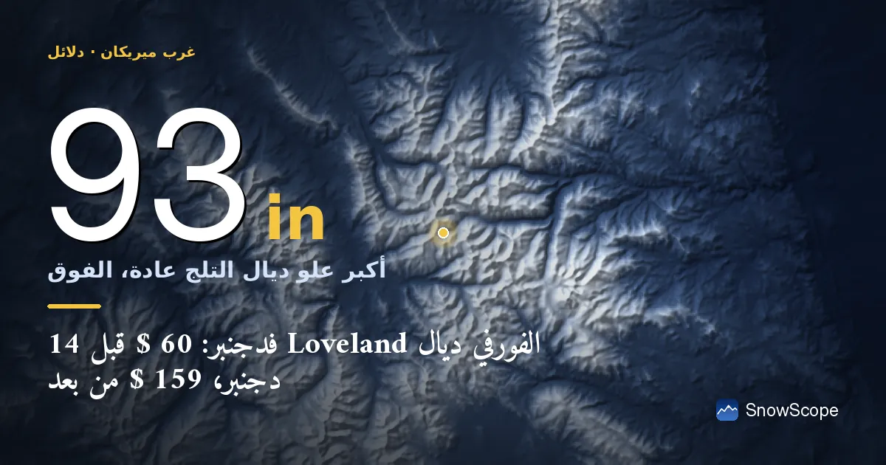

الفورفي ديال Loveland فدجنبر: 60 $ قبل 14 دجنبر، 159 $ من بعد
القفزة ديال الثمن فـ Loveland يوم 14 دجنبر حادة بزاف: $60 على الأنترنت كتولي $159 عند الشباك. المشكلة هي أن التلج الجديد فأول دجنبر موجود بصح مش غزير، وأنتي كاتدفع من أجل الارتفاع والأمل بدل محطة كاملة. الأرقام كتبان شنو الزلاجين اللي خاص يأخذو الصفقة وشنو اللي خاص يستنيو.
شوف توقعات التلج مباشرة ديال Loveland Basin Ski Area فالتطبيق ديال SnowScopeالعلو ديال التلج، التنبيهات والخريطة 3D، فابور.
شنو اللي كتاخذ ب $60: رهان على الجهة الوسطانية
فيوم 1 دجنبر عادي فـ Loveland، الجهة الوسطانية (11,780 قدم / 3,592 م)، عندك 20 انش (50 سم) ديال التلج. بعد أسبوعين، يوم 15 دجنبر، كتولي 29 انش (74 سم). الفرق مهم: أول دجنبر يمكن تلعب بصح وسط دجنبر أحسن للنهار كاملة.
نص الشتوات اللي فاتو كانت عندها 20 انش (50 سم) أو أكثر يوم 1 دجنبر فهاد الارتفاع. وسط دجنبر الاحتمالية كتولي 67%، بالتالي الشطر الثاني ديال الشهر رهان أحسن. التذكرة ديال $60 كتدخلك على شباك أرفع وأقل تأكيد.

الارتفاع هو الميزة ديال Loveland فأول الموسم
المحطات ديال Loveland كتتراوح من 10,890 قدم (3,318 م) لـ 12,680 قدم (3,866 م)، مما كيخليها واحد من أعلى المحطات فـ Colorado. هاد الارتفاع معناه التلج الجديد فأول الموسم كيدوم أكثر هنا من المحطات الأخرى. التلج فالجهة الوسطانية عادة كيتستقر لـ آخر شتنبر؛ القاع فـ 10,890 قدم (3,318 م) كيبقا حاضر لحد ما بعد.
يوم 1 دجنبر، القاع عادة عندو فقط 16 انش (40 سم)، بينما الجوج كيكون 20 انش (50 سم). هاد الارتفاع العمودي هو الصحاب ديالك فأول دجنبر: تلعب فوق القاع، بقا على البيستات المحروثة، وعندك حاجة باش تخدم بيها.

شنو هي الرقة كتاع أول دجنبر مقارنة مع وسط الشتا؟
يوم 25 دجنبر، الجهة الوسطانية عادة كتولي 36 انش (92 سم). يوم 31 دجنبر، 39 انش (99 سم). هاد 50% أغمق من أول دجنبر. مارس، أغمق شهر فـ Loveland، كيتوسط 54 انش (137 سم) فالجهة الوسطانية.
الاتجاه الطويل كيبان أول دجنبر توا أرق. فالشتوات اللي فاتو من 1980-81 لـ 1994-95، متوسط 15 دجنبر فالجهة الوسطانية كان 32 انش (81 سم). فآخر 15 شتوة، كان 23 انش (58 سم). الشتا اللي فاتت كانت 19 انش (49 سم) فاك التاريخ.
الـ 4-Pak كتبدل الحساب من 14 دجنبر
واش الموسم العادي كيبدا يوم 14 دجنبر، الثمن عند الشباك كتولي $159. فهاك النقطة، 4-Pak ديال Loveland—أربعة تذاكر لـ $299—كتولي الشراية الأحسن. هاد $75 كل تذكرة، كتقسم كلفة النهار الواحد على النص.
إذا كنتي خاطط نهايتين أو أكثر فوسط لـ آخر دجنبر، شد من صفقة أول الموسم ديال $60 واستنيا 4-Pak. التلج كيكون أغمق، المحطة أكثر مفتوحة، وكلفة التذكرة كتكون أقل.
شنو الفرق: Loveland، Ski Cooper، Wolf Creek
Ski Cooper، بجنب Leadville، كتخزن التذاكر 49$ أيام الشغل و99$ أيام الويك-إند. فيوم 15 دجنبر عادي، الجهة الوسطانية عندها 26 انش (66 سم)—مش بزاف أقل من Loveland 29 انش. Wolf Creek، الأكثر التلج من التلاتة، عندها 34 انش (87 سم) فاك التاريخ بصح كتفرض 96–110$.
تذكرة Loveland ديال $60 على الأنترنت كتبيت Cooper يوم الويك-إند والثمن ديال Wolf Creek كل يوم، حتى وإن كان التلج أرق. بصح إذا كنتي تلعبي أيام الشغل، Cooper ب 49$ أرخص وعندو التلج ديال دجنبر تقريبا نفسو. القفزة ديال الثمن من $60 لـ $159 يوم 14 دجنبر هي الميزة الحقيقية ديال Loveland: شري قبل اك التاريخ.
شنو الزلاجين اللي خاص يستعملو التذكرة ديال $60
خذ صفقة أول الموسم إذا كنتي كتلعبي البيستات المحروثة، كتتحمل 20–25 انش (50–65 سم) قواعس، وساكنة بجنب Denver. شري على الأنترنت بوقت باش. جتنبي الثمن ديال الشباك 119$ دولار—ما عندو منطق.
شد من التذكرة إذا كنتي خاطة المحطة كاملة مفتوحة، محتاج التلج الطري، أو يمكن تلعبي وسط دجنبر. بعد 14 دجنبر، شري 4-Pak أو استعمل Indy Pass (Loveland عضو؛ Indy Base توجه 419$، Indy+ توجه 469$ لنهايتين فكل محطة من 300+ محطة).
نصايح للي كيتزلجو
- شري التذكرة ديال $60 على الأنترنت بصح، ما عند الشباك. الشراية بوقت هي الصفقة كاملة.
- لعب فوق 11,500 قدم (3,500 م) فأول دجنبر؛ القاع أرق وممكن يبان الحجر تحت الغطاء الخفيف.
- جيب حماية من الريح: الجهة الوسطانية 11,780 قدم (3,592 م) والريح ديال دجنبر حادة بزاف فهاد الارتفاع.
- من 14 دجنبر لحد الآخر، الـ 4-Pak ب 299$ أحسن من التذكرة ديال الشباك 159$. خطط نهاياتك بوقت.
- شوف Colorado Department of Transportation (CDOT) للطريق I-70 و Eisenhower Tunnel الإغلاقات؛ أول الموسم معناه خطر ديال الجو.
على هاد الأرقام
العلو ديال التلج فالمحطات هو أكثر تلج فالجهة الفوقانية فالتاريخ المكتوب؛ هادو تقديرات لمنطقة، ماشي قياس فنقطة وحدة. التوقعات يمكن تتبدل. ديما شوف النشرة الرسمية ديال الانهيارات قبل ما تخرج من البيست.
النشرات الرسمية ديال الانهيارات: Colorado Avalanche Information Center
كيفاش تستاشهد بهاد المقال
للبحث، التعليم ولا الصحافة: الأرقام والرسومات تقدر تعاود تخدم بيهم بحرية تحت CC BY 4.0 مع هاد الاستشهاد.
SnowScope (2026), الفورفي ديال Loveland فدجنبر: 60 $ قبل 14 دجنبر، 159 $ من بعد, https://snowscope.app/blog/ar/2026/11/loveland-ski-area-december-deal-2026.html, تشاف ف 2026-11-14
SnowScope (Atlas Labs). (2026, November 14). الفورفي ديال Loveland فدجنبر: 60 $ قبل 14 دجنبر، 159 $ من بعد. SnowScope snow reports. https://snowscope.app/blog/ar/2026/11/loveland-ski-area-december-deal-2026.html
BibTeX
@misc{snowscope2026lovelandskiareadecemberd,
author = {{SnowScope (Atlas Labs)}},
title = {الفورفي ديال Loveland فدجنبر: 60 $ قبل 14 دجنبر، 159 $ من بعد},
year = {2026},
month = nov,
howpublished = {\url{https://snowscope.app/blog/ar/2026/11/loveland-ski-area-december-deal-2026.html}},
note = {Published 2026-11-14 17:47 UTC; accessed 2026-11-14}
}· CC BY 4.0 · الطريقة، الداتا والأدوات →
Loveland Basin Ski Area: التلج والحرارة حسب العلو، هاد الشتا مقارنة مع اللي فاتت (الأدوات) →
تابع Loveland Basin Ski Area
فابور: ميساج ملي يجي التلج، والتوقعات كل صباح.